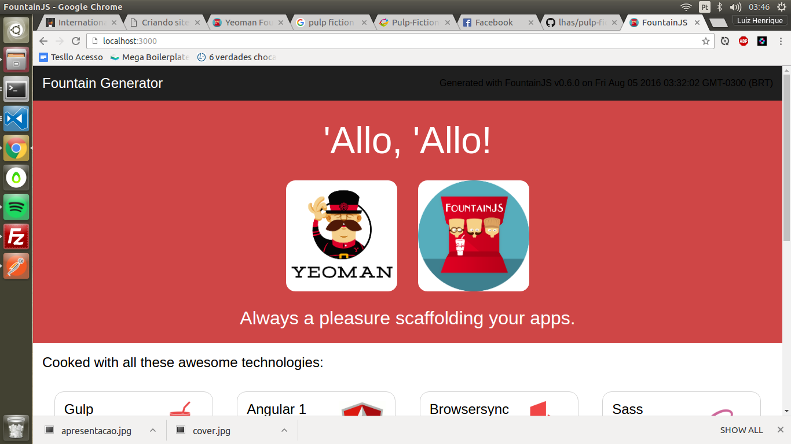
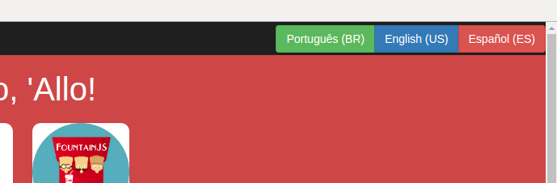
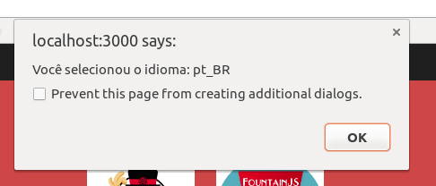
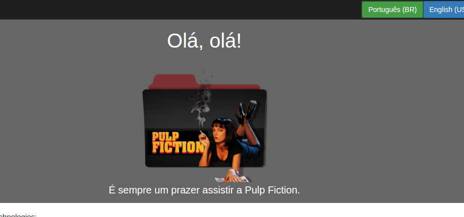

Graças a internet, empresas que no passado dependiam do mercado local para ofertar e adquirir serviços, agora podem escalar seu empreendimento a nível global.
Por esta exposição, se faz necessário adaptar-se ao idioma local do público alvo desejado.
Além disto, o inglês tornou-se idioma padrão em muitos ambientes de trabalho e até mesmo no nosso lazer (jogos, quadrinhos, livros, filmes, etc).
Então se você está *abrindo uma loja*, *alugando uma sala comercial*, *lançando uma startup*, ou até mesmo *apoiando causas sociais*, é interessante que você possa conectar-se ao máximo possível de pessoas nesta era cyber.
Existem dezenas formas de resolver este problema hoje em dia, principalmente dependendo da tecnologia que o seu site funciona por trás.
O WordPress por exemplo, tem até o momento deste post MIL CENTO E OITENTA (1.180) plugins com o nome “translate”.
Mas hoje iremos aprender como resolver esta demanda usando nosso querido AngularJS.
Você verá como é fácil, prático e supeeer organizado deixar o seu site multi-idiomas.
Tu vai levar menos de 30 minutos para reproduzir este tutorial.
*E vai ter um resultado fantástico para o seu cliente.*
JAVASCRIPT MOTHERFUCKERS, DO YOU WRITE IT?
O cenário
Nosso site atual será este aqui:

Você pode ter um igualzinho na sua máquina se você usar o Yeoman e o generator deles FountainJS.
Iniciando o projeto
# Crie a pasta para o nosso projeto
mkdir pulp-fiction/
# Entre na pasta
cd pulp-fiction/
# Instale o Yeoman e o gerador que iremos usar
# (este passo é totalmente opcional para fazermos a tradução, é só para termos um site de base mas aqui poderia ser o código fonte do seu site)
# O Gulp também é opcional, só instale caso você não tenha ainda na sua máquina
npm install -g yo generator-fountain-webapp gulp-cli
# Inicializando o gerador do FountainJS
yo fountain-webapp
# Selecione (na ordem):
# - Angular 1
# - None with Bower and Script injection
# - Pure old Javascript
# - SASS
# - A working landing page
# - Angular UI RouterApós rodar os comandos acima, ele irá instalar as dependências listadas no package.json e depois instalar nossas dependências de front-end no bower.json.
Para rodar o projeto o comando é:
gulp serve
Você poderar acessar o projeto em http://localhost:3000/.
O bacana do gerador que nós utilizamos, o FountainJS, é que além dele gerar o código usado pelo Angular no padrão já sugerido pelo Google, ele também vem incluso uma suíte de testes unitários e E2E.
Pode ficar meio lento na hora de instalar mas acredite vale MUITO a pena!
E nas próximas instalações graças ao cacheamento do NPM ela será mais rápida.
Preparando o terreno
Vamos colocar um Bootstrap maroto? Vamos. Abra um novo terminal, vá até a pasta do projeto e rode:
# Não se esqueça do --save, ele é importante neste processo
bower install bootstrap-scss --saveA magia começa a acontecer aqui: após você instalar o Bootstrap na última versão com o Bower, o FountainJS deixou o Gulp preparado de uma forma tão mágica, que ele irá observar (watch) novas instalações no bower.json e irá injetar os scripts principais do mesmo no nosso HTML.
Não acredita? Olha o código fonte do nosso site agora. Você vai ver algo parecido com isso:
<!-- build:js({.tmp,src}) scripts/vendor.js -->
<!-- bower:js -->
<script src="../bower_components/angular/angular.js"></script>
<script src="../bower_components/angular-ui-router/release/angular-ui-router.js"></script>
<script src="../bower_components/bootstrap-css/js/bootstrap.min.js"></script>
<!-- endbower -->
<!-- endbuild -->Só tem um probleminha aqui. O nosso Bootstrap inclui por padrão o bootstrap.min.js.
Nós não vamos usá-lo, já que ele depende do jQuery e o ideal é que nós deixemos de usá-lo.
Não entrarei em detalhes do por que aqui, mas se você tiver iniciando um projeto com AngularJS evite o máximo possível depender de bibliotecas que precisem do jQuery.
Você pode saber mais sobre isso neste ótimo artigo do Suissa ou na referência dele You might not need jQuery.
Para removermos esse maldito bootstrap.min.js dali, vamos usar a propriedade “overrides” do bower.
Para isto, edite o nosso bower.json para isto aqui:
{
"name": "fountain-inject",
"version": "0.0.1",
"dependencies": {
"angular": "^1.5.0",
"angular-ui-router": "^0.3.1",
"bootstrap-css": "^3.3.6"
},
// Você deverá incluir este overrides aqui, exatamente embaixo do dependencies
"overrides": {
"bootstrap-css": {
"main": [
"css/bootstrap.min.css"
]
}
},
"devDependencies": {
"angular-mocks": "^1.5.0"
}
}Se você salvar esta modificação no bower.json e atualizar o código-fonte do nosso site verá que o bootstrap.min.js sumiu!
<!-- build:js({.tmp,src}) scripts/vendor.js -->
<!-- bower:js -->
<script src="../bower_components/angular/angular.js"></script>
<script src="../bower_components/angular-ui-router/release/angular-ui-router.js"></script>
<!-- endbower -->
<!-- endbuild -->
Adicionando botões para trocar o idioma
Agora que nosso terreno já está preparado, com AngularJS e Bootstrap, vamos adicionar os botões que permitirão ao nosso usuário final que ele troque de idioma.
Uma observação muito interessante aqui para quem não conhece muito bem como as coisas funcionam com Angular, é que se você estiver usando as rotas através do Angular (com ngRoute ou uiRouter) corretamente, quando o usuário efetuar a troca de idiomas, o site não irá recarregar por completo, somente os dados da View que envolvem o Translate sofrerão modificações. Isso é muito bacana se tratando de usabilidade, já que o usuário não perde desempenho recarregando o site só para trocar o idioma.
Edite o arquivo src/app/header.html:
Dentro do .header-date, vamos adicionar os botões de idioma:
<p class="header-date">
<div class="btn-group">
<button type="button" ng-click="$ctrl.changeLanguage('pt_BR')" class="btn btn-success">Português (BR)</button>
<button type="button" ng-click="$ctrl.changeLanguage('en_US')" class="btn btn-primary">English (US)</button>
<button type="button" ng-click="$ctrl.changeLanguage('es_ES')" class="btn btn-danger">Español (ES)</button>
</div>
</p>Já vi menus mais bonitos, mas para um exemplo tá valendo:

Dando vida a função changeLanguage()
Como você deve ter reparado, ali em cima usamos ng-click=“$ctrl.changeLanguage(’
Esta função ainda não existe, precisamos criá-la. Para isto, abra o arquivo src/app/header.js:
Substitua o conteúdo do header.js por este:
/* header.js */
(function(){
'use strict';
angular
.module('app')
.component('fountainHeader', {
templateUrl: 'app/header.html',
controller: HeaderController
});
HeaderController.$inject = [];
function HeaderController() {
var vm = this;
vm.changeLanguage = changeLanguage;
/* Esta função modifica o idioma do nosso app. */
function changeLanguage(locale) {
alert('Você selecionou o idioma: ' + locale);
}
}
})();

O principal está entre a linha 16 e 21. Ainda não mudamos o idioma, mas já conseguimos identificar qual o idioma que o usuário deseja carregar.
Instalando o angular-translate
Esta é a biblioteca que iremos utilizar para facilitar a nossa vida.
Para instalá-la rode:
bower install angular-translate --saveAgora adicione o módulo dele como dependência do nosso app.
Para isto, edite o src/index.js e deixe assim:
angular
.module('app', ['ui.router', 'pascalprecht.translate']);
Configurando o angular-translate
Precisamos efetuar algumas configurações como: - Indicar o idioma padrão (preferido); - Carregar as traduções de cada idioma; - Adaptar as strings do conteúdo do nosso site para serem mutáveis ao idioma selecionado;

Vamos configurar os dois primeiros itens primeiro.
Para isto, vamos usar novamente o arquivo src/index.js.
Coloque no final do conteúdo deste arquivo o seguinte:
/* Configuração do angular-translate */
angular
.module('app')
.config(translateConfig);
translateConfig.$inject = ['$translateProvider'];
function translateConfig($translateProvider) {
// Carregamos as traduções de cada idioma
// English (US)
$translateProvider.translations('en_US', {
'allo_allo': 'Hello, hello!',
'always_a_pleasure': 'Its always a pleasure to watch Pulp Fiction.'
});
// Português (BR)
$translateProvider.translations('pt_BR', {
'allo_allo': 'Olá, olá!',
'always_a_pleasure': 'É sempre um prazer assistir a Pulp Fiction.'
});
// Español (ES)
$translateProvider.translations('en_ES', {
'allo_allo': 'Hola, hola!',
'always_a_pleasure': 'Mi gusta churritos. :-)'
});
// Definimos o idioma padrão
$translateProvider.preferredLanguage('pt_BR');
// Se você preferir que o idioma padrão seja detectado pelo idioma do browser
// use as linhas abaixo:
//
// $translateProvider
// .uniformLanguageTag()
// .determinePreferredLanguage();
}

Configurando o conteúdo do nosso site
Precisamos adaptá-lo para que ele possa interpretar as traduções definidas pela gente.
Para isto, abra o arquivo src/app/title.html e deixe da seguinte forma:
<div class="title">
<h1 class="title-h1">{{'allo_allo' | translate}}</h1>
<div>
<img class="title-logo" src="http://fountainjs.io/assets/imgs/yeoman.png"/>
<img class="title-logo" src="http://fountainjs.io/assets/imgs/fountain.png"/>
</div>
<h2 class="title-h2">{{'always_a_pleasure' | translate}}</h2>
</div>No caso, a sintaxe necessária para traduzirmos é esta:
{{'identificador_aqui' | translate}}‘identificador_aqui’: é o nome que nós demos no src/index.js para cada tradução. É uma espécie de chave primária.
translate: é uma diretiva que nos é disponibilizada através do angular-translate. Por ser uma diretiva carregada por ele, você pode usá-la onde quiser, mesmo fora do escopo de um controller.
As chaves { { } } significam que nós queremos dar um “output” na informação retornada pela expressão que nós definimos.

Perfeito!
A nossa tradução já está funcionando. Se você abrir o site agora, verá que o conteúdo carrega no idioma padrão:

Só que falta uma coisa. Se você clicar nos botões de idiomas, eles ainda não serão trocados.
Para fazermos eles funcionarem é muito simples:
Fazendo os botões de tradução traduzirem
Edite novamente o arquivo src/app/header.js:
// Antigo
HeaderController.$inject = [];
function HeaderController() { }
// Novo
HeaderController.$inject = ['$translate', '$state'];
function HeaderController($translate, $state) { }
No caso injetamos 2 Services:
$translate: Service oriundo do angular-translate. Ele que irá nos ajudar a efetuar a troca de idioma.
$state: Service oriundo do ui-router. No caso do ngRoute é outro nome mas a ideia é a mesma. Ele que irá nos ajudar a atualizar a rota atual (sem atualizar todo o browser, só recarregando o template).
Agora vamos editar a função changeLanguage() para fazer a mágica explicada acima.
Ela ficará assim:
/* Esta função modifica o idioma do nosso app. */
function changeLanguage(locale) {
/* Define o novo idioma atual */
$translate.use(locale);
/* Recarrega o template (sem recarregar o browser) */
$state.reload();
}
Pronto (de verdade)!

Viu como é fácil fazer um site multi-idiomas com Angular1?
Você deve estar agora se perguntando algumas coisas como:
- Como deixar as URLs dinâmicas
- Como fazer com que o site carregue o idioma padrão do sistema operacional
- Como definir as traduções em um arquivo externo ao invés do js
- Como fazer com que o site armazene o ultimo idioma selecionado para futuras visitas
Eu explicaria todas elas aqui, mas o artigo ficaria mais longo do que já está.
Então vou deixar links que podem ser úteis para você descobrir estas respostas você mesmo:
Referências
Armazenar último idioma: https://angular-translate.github.io/docs/#/guide/10_storages Arquivos de tradução em JSON externo: https://angular-translate.github.io/docs/#/guide/12_asynchronous-loading URLs dinâmicas: http://stackoverflow.com/questions/24281652/localize-urls-with-ui-router-and-angular-translate
Para carregar o idioma padrão eu fiz um comentário no código do index.js, basta lê-lo com calma.
Site oficial do angular-translate: https://angular-translate.github.io/ Documentação oficial: https://angular-translate.github.io/docs/#/guide/02_getting-started Outro tutorial gringo com abordagem diferente: https://scotch.io/tutorials/internationalization-of-angularjs-applications

Dica de última hora
Até então tratamos de dados estáticos. Mas e os dados dinâmicos?
Vamos supor que no nosso blog, ao cadastrar um post o usuário possa definir o idioma do mesmo.
Se tratando de base de dados seria algo como:
{
"id": "integer",
"title": "string",
"content": "text",
"language": {
"type": "enum",
"values": ["en_US", "es_ES", "pt_BR"]
}Supomos que já tenhamos um PostService que busque estes dados na nossa API:
(function() {
'use strict';
angular
.module('app')
.service('PostService', PostService);
PostService.$inject = ['$http'];
function PostService($http) {
var service = {
getAll: getAll,
getOne: getOne
};
return service;
function getAll() {
return $http.get('http://localhost:4000/api/post/');
}
function getOne(id) {
return $http.get('http://localhost:4000/api/post/' + id);
}
}
})();
A gente só precisaria adaptar uma coisa nas nossas requições $http:
function getAll() {
return $http.get('http://localhost:4000/api/post/', {
params: {
language: $translate.proposedLanguage()
}
});
}
function getOne(id) {
return $http.get('http://localhost:4000/api/post/' + id, {
params: {
language: $translate.proposedLanguage()
}
});
}
Não se esquecendo de injetar o service $translate no nosso PostService:
PostService.$inject = ['$http', '$translate'];
function PostService($http, $translate) { }
Esta função $translate.proposedLanguage() retorna o idioma atual.
Daí é só você através da sua API adaptar como você achar mais prático para a informação retornada ser correta.
Você receberá esta variável “language” como querystring (parâmetro GET) na API.
Notou algo escrito errado?
Por favor, não deixe de me informar, seja aqui no blog, no Facebook, ou no meu e-mail pessoal luizhrqas@gmail.com.
Código-fonte
Todo o código fonte trabalhado aqui está disponível no GitHub: clique aqui.
Você também pode ver a aplicação funcionando aqui: clique aqui.
Observação: a aplicação foi gerada usando gulp dist do FountainJS. Tudo comprimido e perfeitamente bem acabado para o ambiente de produção! :-)
Muuuuuuuuuuito obrigado se você leu até aqui. :-D